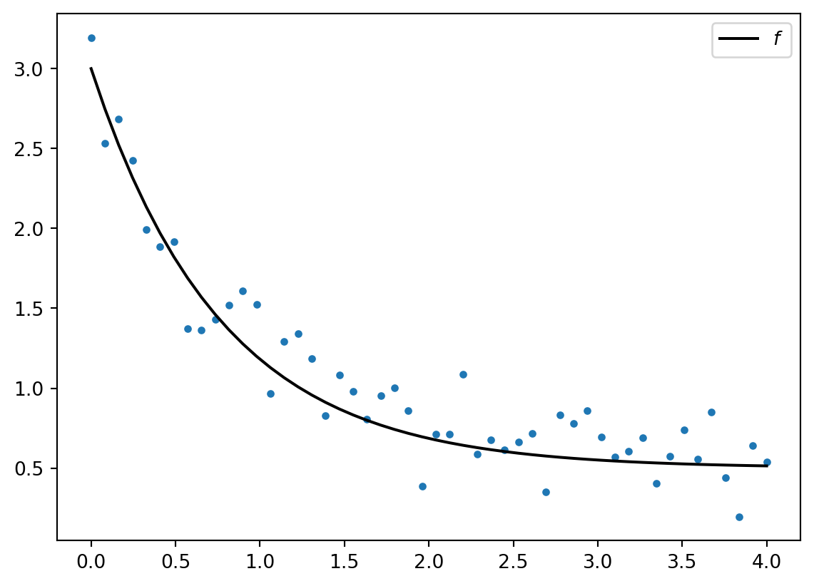
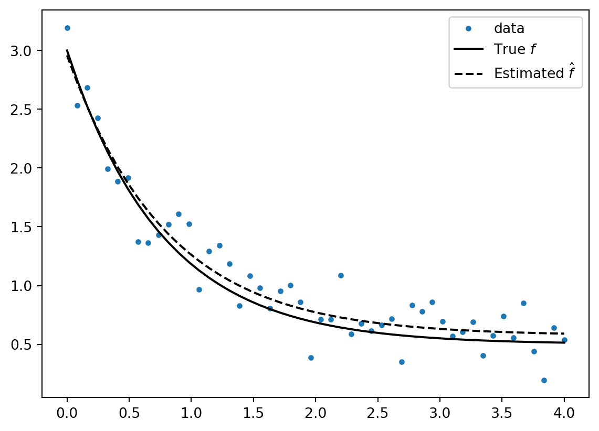
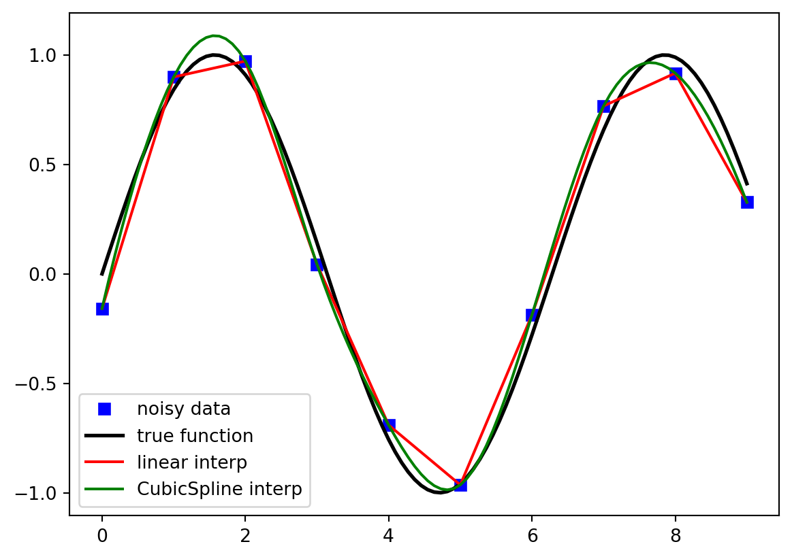

%matplotlib inline
from scipy import linalg
import numpy as np
import matplotlib.pyplot as pltSciPy
Disclaimer: this course is adapted from the notebooks by
Introduction
SciPy is a scientific library that builds upon NumPy. Among others, SciPy deals with:
- Integration (scipy.integrate)
- Optimization (scipy.optimize)
- Interpolation (scipy.interpolate)
- Fourier Transform (scipy.fftpack)
- Signal Processing (scipy.signal)
- Linear Algebra (scipy.linalg)
- Sparse matrices (scipy.sparse)
- Statistics (scipy.stats)
- Image processing (scipy.ndimage)
- IO (input/output) (scipy.io)
References:
- Matplotlib Animations / JavaScript Widgets by Louis Tiao
Linear algebra
scipy for linear algebra : use linalg. It includes functions for solving linear systems, eigenvalues decomposition, SVD, Gaussian elimination (LU, Cholesky), etc.
References:
Solving linear systems:
Find \(x\) such that: \(A x = b\) for specified matrix \(A\) and vector \(b\).
A = np.array([[1, 0, 3], [4, 5, 12], [7, 8, 9]], dtype=float)
b = np.array([[1, 2, 3]], dtype=np.float64).T
print(A, b)
x = linalg.solve(A, b)
print(x, x.shape, b.shape)[[ 1. 0. 3.]
[ 4. 5. 12.]
[ 7. 8. 9.]] [[1.]
[2.]
[3.]]
[[ 0.8 ]
[-0.4 ]
[ 0.06666667]] (3, 1) (3, 1)Check the result at a given precision (different from ==)
np.allclose(A @ x, b, atol=1e-14, rtol=1e-15)TrueRemark: NEVER (or you should really know why) invert a matrix. ALWAYS solve linear systems instead!
Eigenvalues/ Eigenvectors
\(A v_n = \lambda_n v_n\) with \(v_n\) the \(n\)-th eigen vector and \(\lambda_n\) the \(n\)-th eigen value. The associated python functions are eigvals and eig:
A = np.random.randn(3, 3)
A = A + A.T
evals, evecs = linalg.eig(A)
print(evals, "\n ------\n", evecs)
np.allclose(A, evecs @ np.diag(evals) @ evecs.T)[-2.94555995+0.j -1.66951712+0.j 2.57898882+0.j]
------
[[-9.02392741e-01 -4.30913984e-01 6.92900540e-04]
[-3.77482314e-03 6.29705983e-03 -9.99973049e-01]
[-4.30898007e-01 9.02371035e-01 7.30904515e-03]]TrueSymmetric matrices
If A is symmetric you should use eigvalsh (H for Hermitian) instead: This is more robust and leverages the structures (you know they are real!)
Matrix operations
linalg.trace(A)# tracelinalg.det(A)# determinantlinalg.inv(A)# Inverse, consider NEVER using it though :)
Norms
print(linalg.norm(A, ord="fro")) # fro for Frobenius
print((np.sum(A ** 2)) ** 0.5)
print(linalg.norm(A, ord=2))
print((linalg.eigvalsh(A.T @ A) ** 0.5))
print(linalg.norm(A, ord=np.inf))4.256147807821083
4.256147807821083
2.9455599493956024
[1.66951712 2.57898882 2.94555995]
3.212057299344504A = np.random.randn(3, 3)
print(linalg.norm(A, ord=np.inf))4.267401893422195Random generation, distributions, etc.
References:
- Good practices with numpy random number generators by Albert Thomas
- Numpy documentation on RandomState
- Random Widgets, by Joseph Salmon: Visualization of various popular distributions.
seed = 12345
rng = np.random.default_rng(seed) # can be called without a seed
rng.random()0.22733602246716966Optimization
Goal: find functions minima or maxima
References:
- Scipy Lectures on mathematical optimization.
from scipy import optimizeFinding (local!) minima
def f(x):
return 4 * x ** 3 + (x - 2) ** 2 + x ** 4
def mf(x):
return -(4 * x ** 3 + (x - 2) ** 2 + x ** 4)
xs = np.linspace(-5, 3, 100)
plt.figure()
plt.plot(xs, f(xs))
plt.show()Default solver for minimization/maximization: fmin_bfgs (see Wikipedia on BFGS)
x_min = optimize.fmin_bfgs(f, x0=-4)
x_max = optimize.fmin_bfgs(mf, x0=-2)
x_min2 = optimize.fmin_bfgs(f, x0=2)
plt.figure()
plt.plot(xs, f(xs))
plt.plot(x_min, f(x_min), "o", markersize=10, color="orange")
plt.plot(x_min2, f(x_min2), "o", markersize=10, color="red")
plt.plot(x_max, f(x_max), "|", markersize=20)
plt.show()Optimization terminated successfully.
Current function value: -3.506641
Iterations: 7
Function evaluations: 16
Gradient evaluations: 8
Optimization terminated successfully.
Current function value: -6.201654
Iterations: 5
Function evaluations: 12
Gradient evaluations: 6
Optimization terminated successfully.
Current function value: 2.804988
Iterations: 7
Function evaluations: 16
Gradient evaluations: 8Find the zeros of a function
Find \(x\) such that \(f(x) = 0\), with fsolve.
omega_c = 3.0
def f(omega):
return np.tan(2 * np.pi * omega) - omega_c / omega
x = np.linspace(1e-8, 3.2, 1000)
y = f(x)
# Remove vertical lines when the function flips signs
mask = np.where(np.abs(y) > 50)
x[mask] = y[mask] = np.nan
plt.plot(x, y)
plt.plot([0, 3.3], [0, 0], "k")
plt.ylim(-5, 5)
optimize.fsolve(f, 0.72)
optimize.fsolve(f, 1.1)
optimize.fsolve(f, np.linspace(0.001, 3, 20))
np.unique(np.round(optimize.fsolve(f, np.linspace(0.2, 3, 20)), 3))
my_zeros = (
np.unique((optimize.fsolve(f, np.linspace(0.2, 3, 20)) * 1000).astype(int)) / 1000.0
)
plt.figure()
plt.plot(x, y, label="$f$")
plt.plot([0, 3.3], [0, 0], "k")
plt.plot(my_zeros, np.zeros(my_zeros.shape), "o", label="$x : f(x)=0$")
plt.legend()
plt.show()Parameters estimation
from scipy.optimize import curve_fit
def f(x, a, b, c):
"""f(x) = a exp(-bx) + c."""
return a * np.exp(-b * x) + c
x = np.linspace(0, 4, 50)
y = f(x, 2.5, 1.3, 0.5) # true signal
yn = y + 0.2 * np.random.randn(len(x)) # noisy added
plt.figure()
plt.plot(x, yn, ".")
plt.plot(x, y, "k", label="$f$")
plt.legend()
plt.show()
(a, b, c), _ = curve_fit(f, x, yn)
print(a,"\n", b,"\n", c)
2.428262500700694
1.4922203068390631
0.5479039655128847Displaying
plt.figure()
plt.plot(x, yn, ".", label="data")
plt.plot(x, y, "k", label="True $f$")
plt.plot(x, f(x, a, b, c), "--k", label="Estimated $\hat{f}$")
plt.legend()
plt.show()
For polynomial fitting, one can directly use numpy functionsL
x = np.linspace(0, 1, 10)
y = np.sin(x * np.pi / 2.0)
line = np.polyfit(x, y, deg=10)
plt.figure()
plt.plot(x, y, ".", label="data")
plt.plot(x, np.polyval(line, x), "k--", label="polynomial approximation")
plt.legend()
plt.show()/tmp/ipykernel_14565/4158621946.py:3: RankWarning:
Polyfit may be poorly conditioned

Interpolation
from scipy.interpolate import interp1d, CubicSpline
def f(x):
return np.sin(x)
n = np.arange(0, 10)
x = np.linspace(0, 9, 100)
y_meas = f(n) + 0.1 * np.random.randn(len(n)) # add noise
y_real = f(x)
linear_interpolation = interp1d(n, y_meas)
y_interp1 = linear_interpolation(x)
cubic_interpolation = CubicSpline(n, y_meas)
y_interp2 = cubic_interpolation(x)
plt.figure()
plt.plot(n, y_meas, "bs", label="noisy data")
plt.plot(x, y_real, "k", lw=2, label="true function")
plt.plot(x, y_interp1, "r", label="linear interp")
plt.plot(x, y_interp2, "g", label="CubicSpline interp")
plt.legend(loc=3)
plt.show()
Images
RGB decomposition
First, discuss the color decomposition in RGB. The RGB color model is an additive color model[1] in which the red, green and blue primary colors of light are added together in various ways to reproduce a broad array of colors. Hence, each channel (R, G or B) represents a grayscale image, usually coded on [0,1] or [0,255].
from scipy import ndimage, datasets
img = datasets.face()
print(type(img), img.dtype, img.ndim, img.shape)
print(2 ** 8) # uint8-> code sur 256 niveau.
n_1, n_2, n_3 = img.shape
print(n_1, n_2, n_3)
# True image
plt.figure()
plt.imshow(img)
plt.axis("off")
plt.show()<class 'numpy.ndarray'> uint8 3 (768, 1024, 3)
256
768 1024 3fig, ax = plt.subplots(3, 2)
fig.set_size_inches(7, 4.5)
n_1, n_2, n_3 = img.shape
# add subplot titles
ax[0, 0].set_title("Red channel")
ax[0, 0].imshow(img[:, :, 0], cmap=plt.cm.Reds)
ax[0, 1].set_title("Pixel values histogram (red channel)")
ax[0, 1].hist(img[:, :, 0].reshape(n_1 * n_2), np.arange(0, 256))
ax[1, 0].set_title("Green channel")
ax[1, 0].imshow(img[:, :, 1], cmap=plt.cm.Greens)
ax[1, 1].set_title("Pixel values histogram (green channel)")
ax[1, 1].hist(img[:, :, 1].reshape(n_1 * n_2), np.arange(0, 256))
ax[2, 0].set_title("Blue channel")
ax[2, 0].imshow(img[:, :, 2], cmap=plt.cm.Blues)
ax[2, 1].set_title("Pixel values histogram (blue channel)")
ax[2, 1].hist(img[:, :, 2].reshape(n_1 * n_2), np.arange(0, 256))
plt.tight_layout()print(img.flags) # cannot edit...
img_compressed = img.copy()
img_compressed.setflags(write=1)
print(img_compressed.flags) # can edit now
img_compressed[img_compressed < 70] = 50
img_compressed[(img_compressed >= 70) & (img_compressed < 110)] = 100
img_compressed[(img_compressed >= 110) & (img_compressed < 180)] = 150
img_compressed[(img_compressed >= 180)] = 200
plt.figure()
plt.imshow(img_compressed, cmap=plt.cm.gray)
plt.axis("off")
plt.show() C_CONTIGUOUS : True
F_CONTIGUOUS : False
OWNDATA : False
WRITEABLE : False
ALIGNED : True
WRITEBACKIFCOPY : False
C_CONTIGUOUS : True
F_CONTIGUOUS : False
OWNDATA : True
WRITEABLE : True
ALIGNED : True
WRITEBACKIFCOPY : False

Convert a color image in grayscale
plt.figure()
plt.imshow(np.mean(img, axis=2), cmap=plt.cm.gray)
plt.show()Changing colors in an image
import pooch
import requests
import os
url = "https://upload.wikimedia.org/wikipedia/en/thumb/0/05/Flag_of_Brazil.svg/486px-Flag_of_Brazil.svg.png"
name_img = pooch.retrieve(url, known_hash="f0e55d6c9384907aa0629e66dd2133473b9d7467af0f817670e358bded62487f")
img = (255 * plt.imread(name_img)).astype(int)
img = img.copy()
plt.figure()
plt.imshow(img)
fig, ax = plt.subplots(3, 2)
fig.set_size_inches(7, 4.5)
n_1, n_2, n_3 = img.shape
ax[0, 0].imshow(img[:, :, 0], cmap=plt.cm.Reds)
ax[0, 0].set_title("Red channel")
ax[0, 1].hist(img[:, :, 0].reshape(n_1 * n_2), np.arange(0, 256), density=True)
ax[0, 1].set_title("Pixel values histogram (red channel)")
ax[1, 0].imshow(img[:, :, 1], cmap=plt.cm.Greens)
ax[1, 0].set_title("Green channel")
ax[1, 1].hist(img[:, :, 1].reshape(n_1 * n_2), np.arange(0, 256), density=True)
ax[1, 1].set_title("Pixel values histogram (green channel)")
ax[2, 0].imshow(img[:, :, 2], cmap=plt.cm.Blues)
ax[2, 0].set_title("Blue channel")
ax[2, 1].hist(img[:, :, 2].reshape(n_1 * n_2), np.arange(0, 256), density=True)
ax[2, 1].set_title("Pixel values histogram (Blue channel)")
plt.tight_layout()RGBA
RGBA stands for red (R), green (G), blue (B) and alpha (A). Alpha indicates how the transparency allows an image to be combined over others using alpha compositing, with transparent areas.
Hexadecimal decomposition
Often, colors are represented not with an RGB triplet, say (255, 0, 0), but with a hexadecimal code (say #FF0000). To get a hexadecimal decomposition, transform each 8-bit RGB channel (i.e., \(2^8=256\)) into a 2-digit hexadecimal number (i.e., \(16^2=256\)). This requires letters for representing \(10: A, 11: B,\dots, 15: FF\) (see https://www.rgbtohex.net/ for an online converter)
CMYK decomposition
This is rather a subtractive color model, where the primary colors are cyan (C), magenta (M), yellow (Y), and black (B). For a good source to go from RGB to CMYK (and back), see https://fr.wikipedia.org/wiki/Quadrichromie.
HSL (hue, saturation, lightness)
XXX TODO.
Here, you can find a simple online converter for all popular color models: https://www.myfixguide.com/color-converter/.
Image files formats
Bitmap formats: - PNG (raw, uncompressed format, opens with Gimp) - JPG (compressed format) - GIF (compressed, animated format)
Vector formats: - PDF (recommended for your documents) - SVG (easily modifiable with Inkscape) - EPS - etc.
x1 = np.linspace(0.0, 5.0, num=50)
x2 = np.linspace(0.0, 2.0, num=50)
y1 = np.cos(2 * np.pi * x1) * np.exp(-x1)
y2 = np.cos(2 * np.pi * x2)
fig1 = plt.figure(figsize=(5, 4))
plt.plot(x1, y1)
plt.xlim(0, 6)
plt.ylim(-1, 1)Then, we can save the figure in various formats:
fig1.savefig("ma_figure_pas_belle.png", format='png', dpi=90)
fig1.savefig("ma_figure_plus_belle.svg",format='svg', dpi=90)Now that the images have been saved, we can visualize the difference between the PNG and SVG formats.
PNG (zoom on hover):
SVG (zoom on hover):

Note
Some additional effects to produce the above zoom-on-hover effect can be found here: https://www.notuxedo.com/effet-de-zoom-image-css/
References: